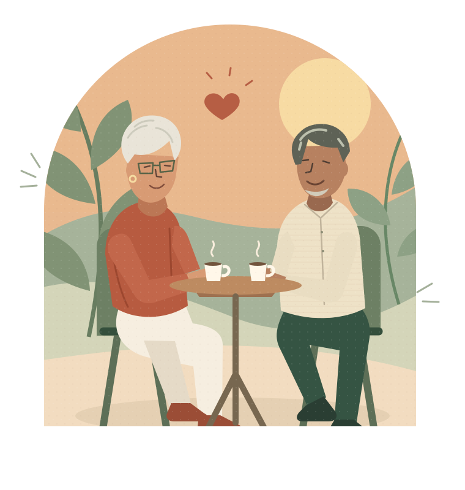

01
Conte um pouco de você
Seus interesses, suas histórias e o que você busca. Um perfil que vai além da foto.
NOVAS CONEXÕES. NO SEU TEMPO.
Um café, uma conversa, um novo começo.
Conheça o BeyondTime: um lugar pensado para criar conexões de verdade depois dos 50.
Para quem tem muita vida
e novas histórias pela frente.

“Vamos tomar um café?”
HÁ MUITAS FORMAS DE ESTAR JUNTO
Você escolhe o que faz sentido para a sua vida. A nossa proposta é aproximar pessoas que procuram o mesmo que você.
Trocar histórias, descobrir um gosto em comum ou simplesmente ter alguém para perguntar: “Como foi seu dia?”. Uma boa amizade pode começar assim.
Uma boa conversa sempre cabe no dia.
Uma prévia da experiência que estamos construindo. Perfis e situações são ilustrativos.
SIMPLES DESDE O PRIMEIRO OLÁ
Estamos desenhando uma experiência clara e acolhedora, para que a tecnologia deixe espaço para o que importa: as pessoas.
Seus interesses, suas histórias e o que você busca. Um perfil que vai além da foto.
A proposta é apresentar pessoas com interesses e intenções que combinam com os seus.
Quando o interesse for mútuo, um primeiro olá pode abrir a porta para uma boa história.
CONFIANÇA SE CONSTRÓI COM CUIDADO
Segurança e respeito fazem parte do que queremos construir, desde o primeiro contato.
Estamos desenvolvendo a verificação de perfil. Ela será um apoio, sem prometer que um perfil está livre de riscos.
O “Anjo da Guarda” é nossa proposta de alertas educativos sobre mensagens suspeitas, sem acusações automáticas.
Bloqueio, denúncia e escolhas de privacidade estão previstos para ajudar você a decidir com quem interagir.
Recursos em desenvolvimento. Nenhuma tecnologia elimina todos os riscos.
ESSA É A IDEIA POR TRÁS DO BEYONDTIME.
VAMOS CONVERSAR?
Conheça um pouco mais da proposta.
Não. A proposta também inclui amizade, companhia e pessoas para compartilhar interesses e atividades. Cada pessoa poderá dizer o que procura, respeitando suas próprias escolhas.
O BeyondTime está sendo desenvolvido principalmente para pessoas com 50 anos ou mais. Queremos uma experiência simples, legível e respeitosa, com espaço para diferentes histórias e níveis de familiaridade com a tecnologia.
O aplicativo ainda está em desenvolvimento e não há uma data de lançamento anunciada. Este site apresenta a proposta. O acesso oficial será divulgado aqui quando estiver disponível.
Estamos trabalhando em verificação de perfil, orientações de segurança, bloqueio, denúncia e alertas educativos. Esses recursos precisam de validação antes do lançamento e não serão uma garantia absoluta sobre a identidade ou as intenções de alguém.
A intenção é tornar o caminho fácil de entender: textos legíveis, botões claros e etapas curtas. A experiência será validada com usuários para entender o que precisa ser melhorado.
APLICATIVO EM DESENVOLVIMENTO
Estamos preparando um novo espaço para encontrar pessoas, compartilhar momentos e começar histórias. Que bom ter você por aqui.
Sobre o lançamento As novidades sobre o lançamento serão publicadas aqui.Um passo de cada vez. O BeyondTime está em desenvolvimento. Ainda não estamos abrindo cadastros nem coletando inscrições neste site.